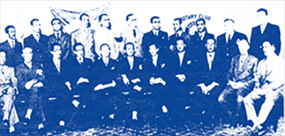

Rotary Club de Bauru
Ano rotário 2025-26 - Plano de Atividades
SÓCIOS FUNDADORES

Sócios fundadores, foto oficial durante a entrega da carta constitutiva do clube ( 30 de Junho de 1936).
- Abel de Almeida Magalhães
- Alencar de Carvalho
- Alfredo de Castilho
- Alípio Gonçalves dos Santos
- Arildo Soares
- César A. de Camargo Pinto
- Ignácio A. Nasrala
- João de Deus da Graça Leite
- José Fernandes
- José Manuel Cintra
- José Nabantino Ramos
- José Nogueira de Carvalho
- José Ribeiro da Silva
- Luiz Bourgogne
- Luiz Salla
- Levindo Paiva Duque
- Plínio Ferraz
- Rodolfo Koepping
- Shichiro Haraguchi
- Sylvio Miraglia
- Waldomiro Guedes de Azevedo